|
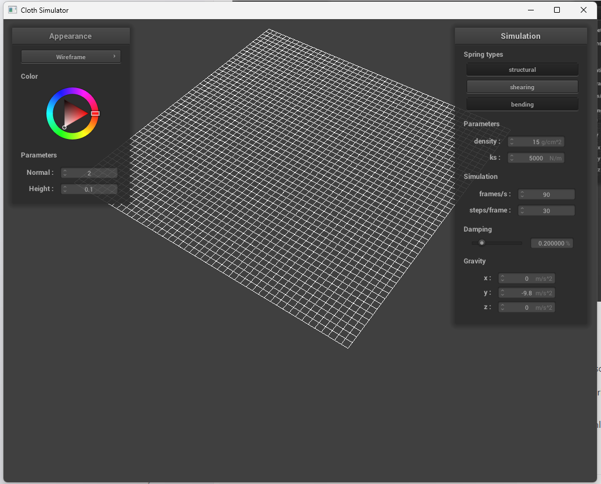 |
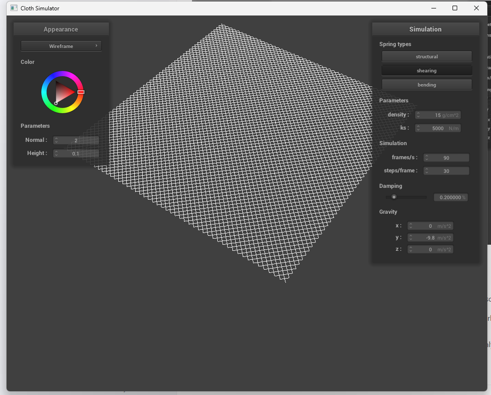 |
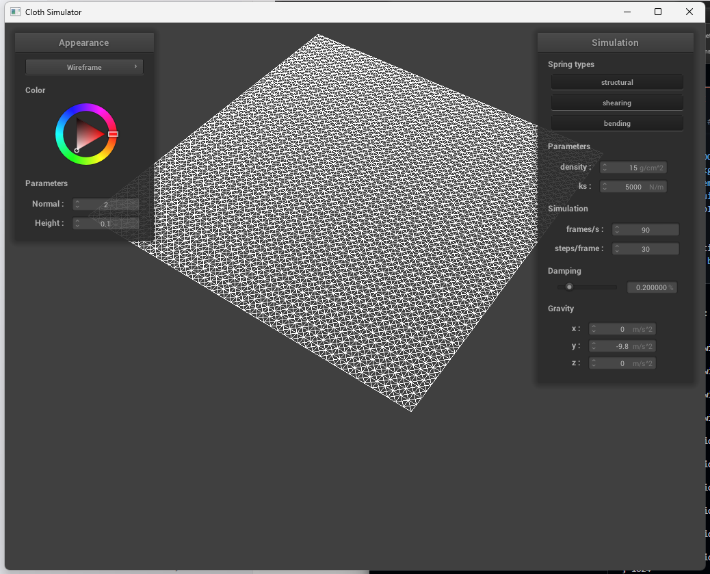 |
With low ks (ks = 10 N/m), the springs are very weak, so the cloth stretches and sags dramatically under gravity. The top edge bows inward heavily, and the cloth forms pronounced horizontal ripples along the upper region as it settles, because the weak springs cannot resist the lateral compression from the sagging mass. With high ks (ks = 10,000 N/m), the cloth is much stiffer, so it barely droops. The top edge has a shallow, clean curve and the surface is nearly flat with minimal wrinkle detail. It snaps to rest quickly with little oscillation.
With low density (density = 5 g/cm²), the cloth is very light, so gravity has less pull on it. The sag at the top is shallow and smooth, and the cloth settles almost immediately with little drama. With high density (density = 30 g/cm²), the cloth is heavier, so you see deeper, heavier draping with more pronounced sagging of the free-hanging portions, and the cloth pulls further downward before reaching equilibrium compared to the light case.
With low damping (damping = 0.046%), energy dissipates very slowly, so the cloth oscillates and swings for a long time before settling. The screenshot captures it mid-motion with complex, chaotic folds across the entire surface, since there is nothing stopping the cloth from swinging past its rest position repeatedly. With high damping (damping = 0.85%), the cloth moves as if dragging through thick fluid. It descends smoothly and sluggishly to rest without any overshoot or oscillation, landing in a clean, symmetric drape.
|
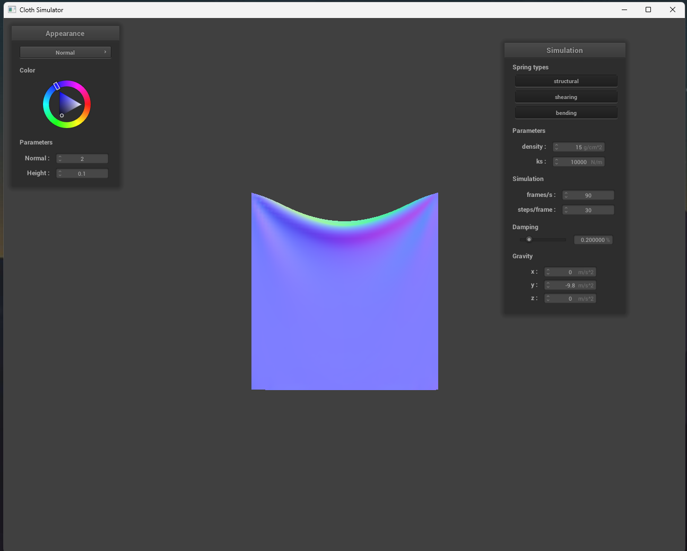 |
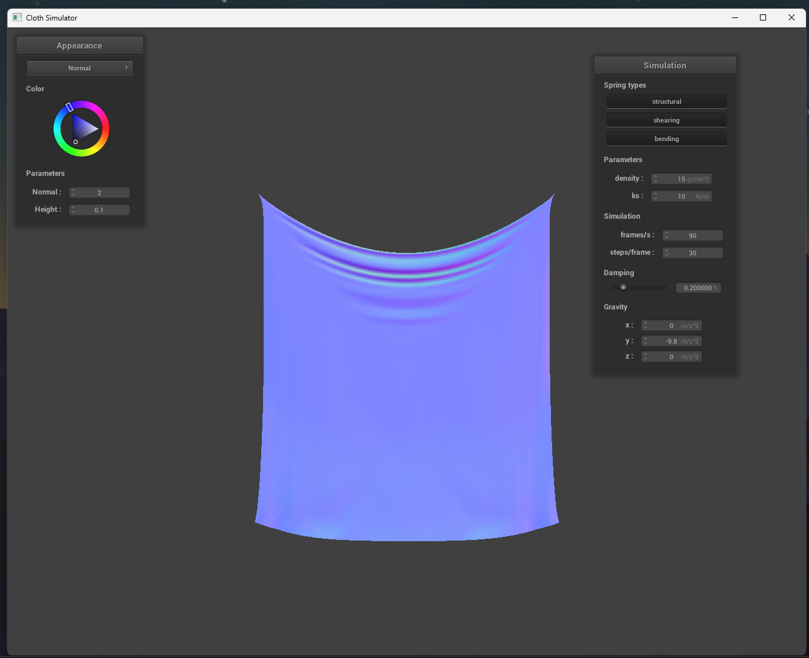 |
|
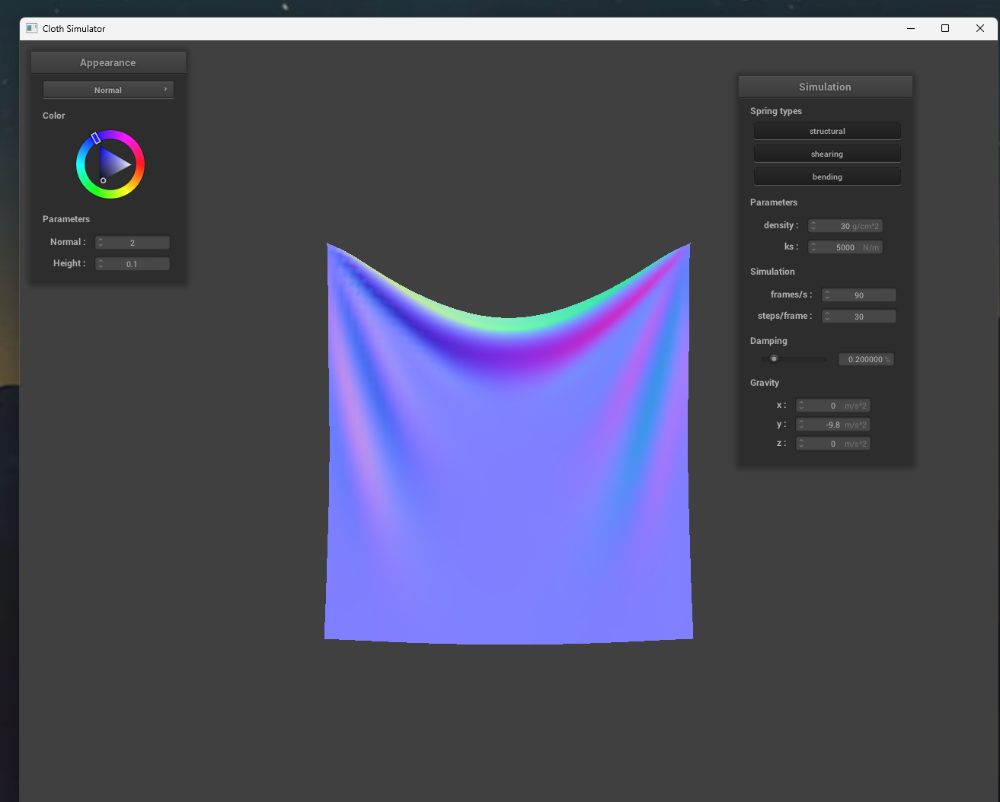 |
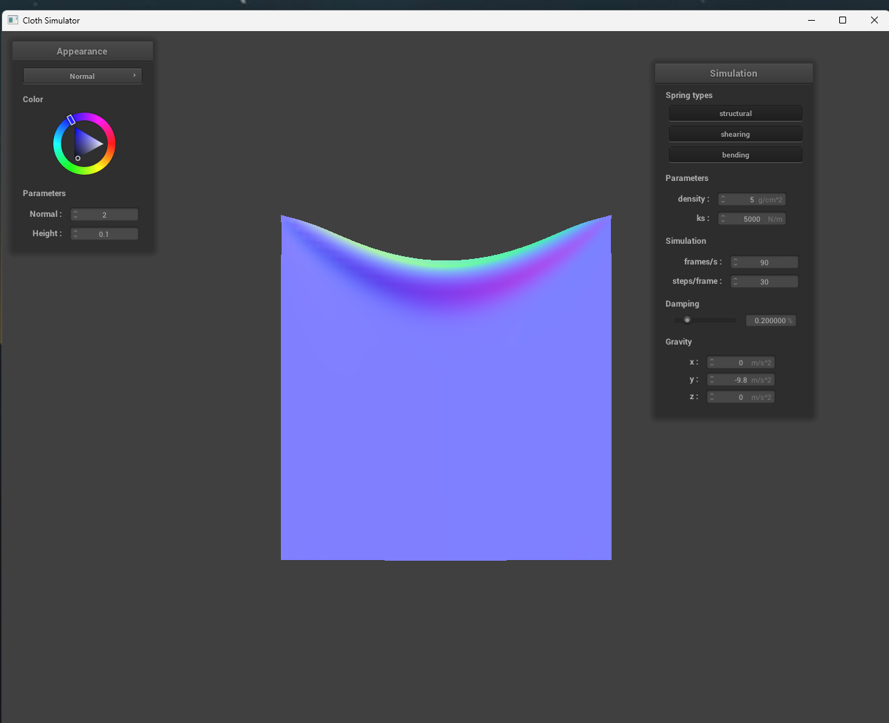 |
|
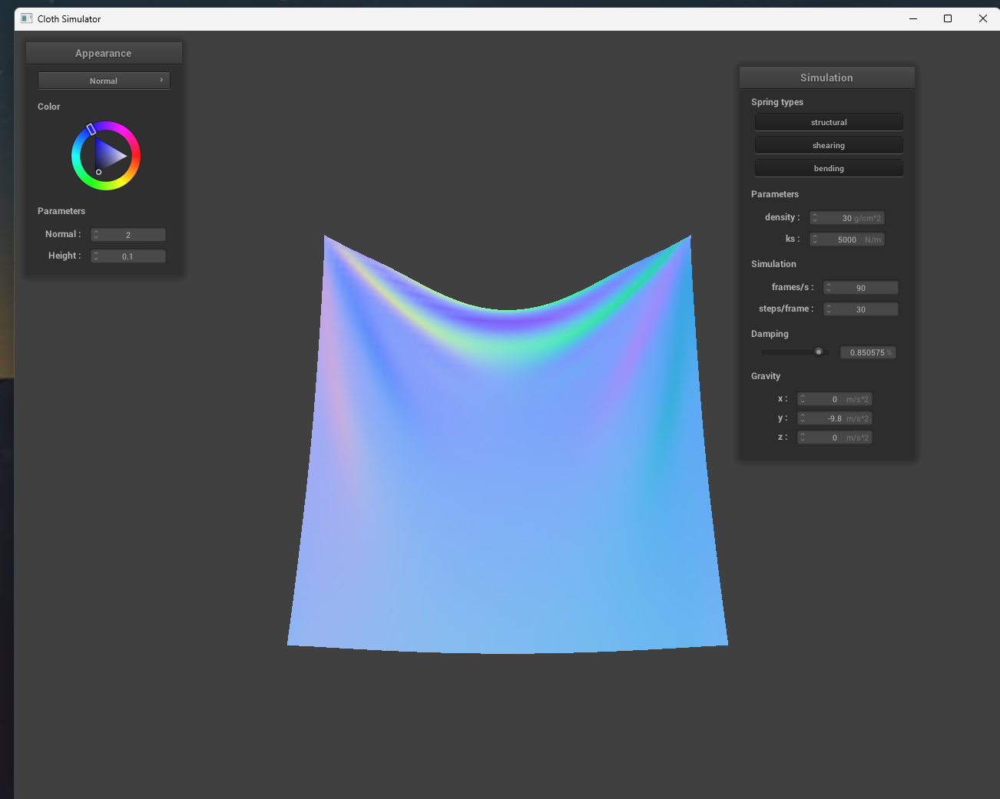 |
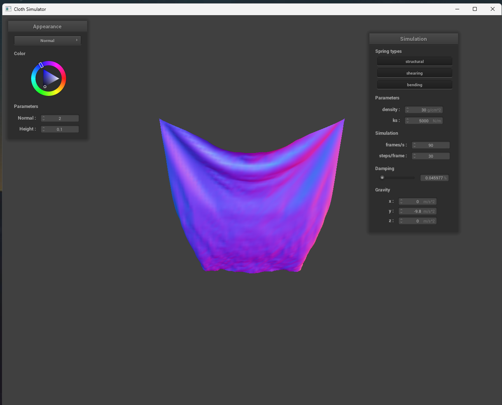 |
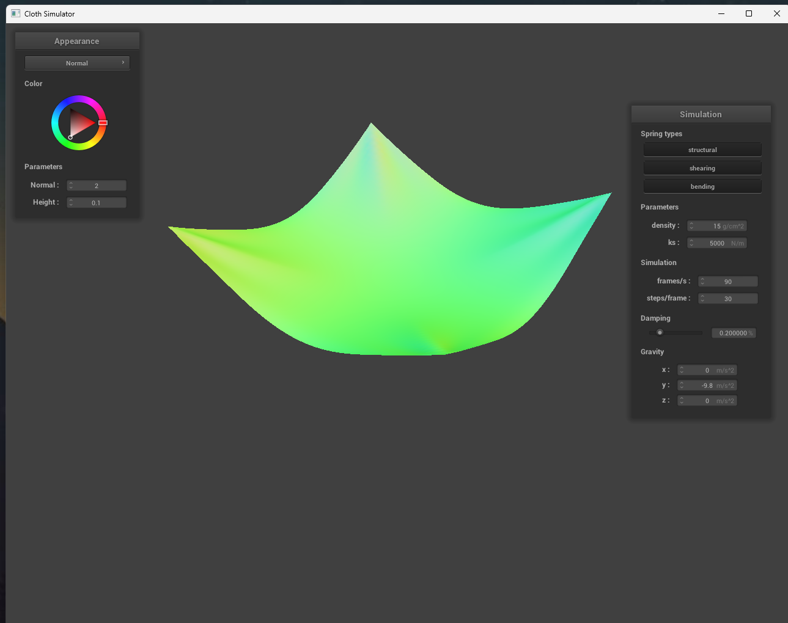
For sphere collision, at each timestep I check every point mass against the sphere. If the distance from the point mass to the sphere's origin is less than the radius, the point is inside and needs to be pushed out. I compute the tangent point by casting a ray from the sphere center through the point mass position and landing it on the sphere surface, then apply a correction vector from the point's current position to that tangent point, scaled down by friction (1 - f). The corrected position is set as the new position.
For plane collision, I detect a crossing event by checking whether the
point mass's current and previous positions lie on opposite sides of the
plane using the sign of their dot products with the plane normal. If a
crossing occurred, I compute the tangent point where the path
intersects the plane, then offset it slightly above the surface by a
small SURFACE_OFFSET in the normal direction so the cloth
rests just on top rather than clipping through. The same
friction-scaled correction is applied.
At ks = 5,000 (Image 1), the cloth drapes naturally over the sphere with smooth, flowing folds that hang loosely around the sides. The fabric conforms well to the sphere's curvature at the top while the excess material folds into a few natural creases hanging below.
At ks = 50,000 (Image 2), the stiffer springs resist bending much more aggressively. The cloth still covers the sphere but the folds are sharper and more angular, and the bottom edges curl and fold back on themselves in tighter, more rigid creases rather than flowing smoothly. The cloth sits slightly higher and less conformally on the sphere since the springs fight against being bent around the curved surface.
At lower ks (500, not shown here), the cloth would be even more compliant, draping closer and more smoothly over the sphere's surface with softer, more numerous small folds and the fabric pulling in tighter around the equator.
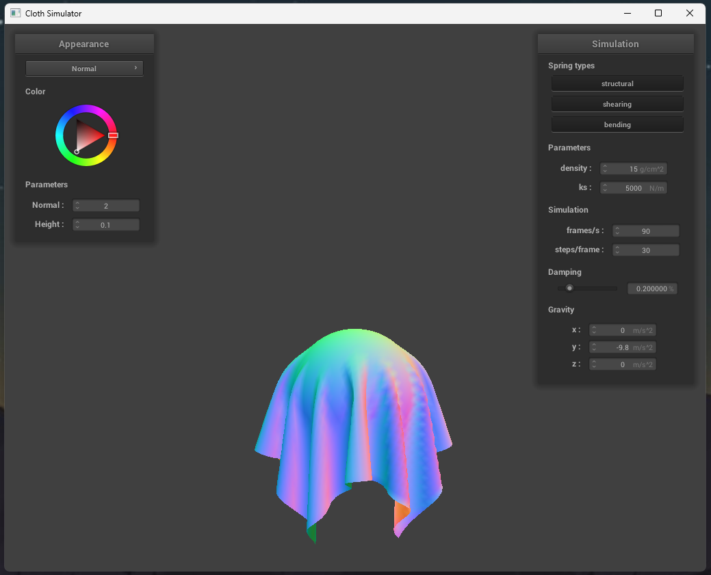
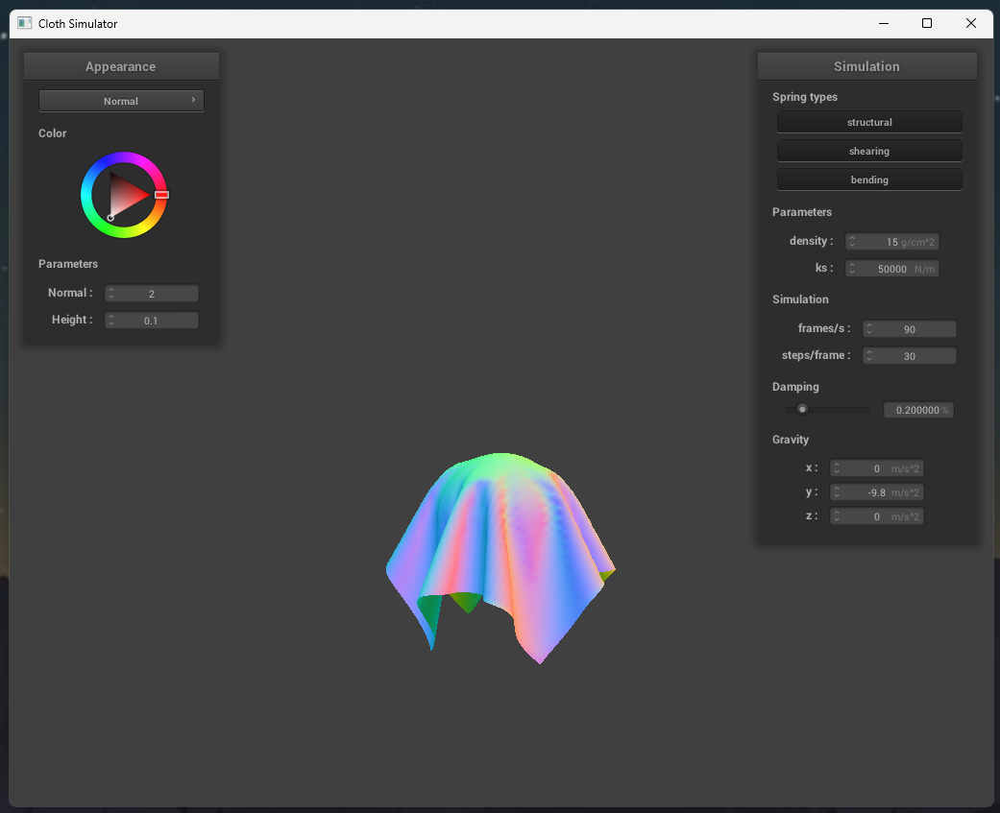
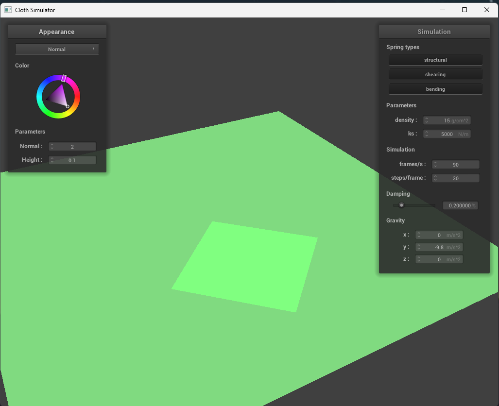
The self-collision system has three components: hashing, spatial map construction, and the per-point collision response.
hash_position)
The world is partitioned into a 3D grid of voxels whose dimensions are
3w / num_width_points, 3h /
num_height_points, and max(w_cell,
h_cell) in thickness—sized to be roughly 3× the
average point mass spacing. A position is mapped to a cell index via
floor(pos / cell_size) per axis, then the three integer
indices are packed into a single float key using a polynomial
ix s2 +
iy s + iz with
s = 100,000, giving a unique scalar identifier for each cell.
build_spatial_map)Each frame, the map is cleared and rebuilt from scratch. Every point mass is hashed to its cell key and inserted into that cell's candidate list. This gives O(1) average-case lookup for nearby points.
self_collide)
For a given point mass, I look up its cell and all 26 neighboring cells
(the full 3×3×3 neighborhood). For each candidate in those
cells that isn't the point itself, I check whether the distance between
them is less than 2 × thickness. If so, I compute a
correction vector along the separation direction with magnitude
(2×thickness - dist) to push the point
out to the minimum separation distance. All such correction vectors are
averaged together, then divided by simulation_steps to
spread the correction smoothly across substeps rather than applying it
all at once, which prevents jitter.
With high density, the cloth carries more mass per unit area, so gravitational force dominates over the spring restoration forces. As it falls and folds onto itself, the heavy cloth crumples into a compact, tightly bunched pile with many overlapping layers pressed flat against the plane. The self-collision system has to work hard against the inertia of the dense material, resulting in a dense, wrinkled heap close to the ground.
With low density, the cloth is much lighter so the springs have relatively more influence over the final shape. It folds more gently and retains more of its original area when settled, spreading out into broader, smoother folds rather than collapsing into a tight mass. The self-collision corrections are more effective since there is less momentum driving points into each other.
High ks makes the cloth stiff and resistant to bending. As it falls, the springs strongly resist being compressed or stretched, so the cloth tends to fold in larger, more sweeping curves rather than crumpling into fine wrinkles. It holds its shape more and the self-folded regions push apart from each other more aggressively since the structural springs fight against deformation.
Low ks produces a very limp, compliant cloth that folds readily into many small, fine wrinkles. The weak springs offer little resistance to the falling motion so the cloth collapses into a more chaotic, densely wrinkled pile with tighter and more numerous folds where layers overlap.
In the screenshots, the high density case shows the cloth flattened into a crumpled heap close to the ground, while low density results in a taller, more open folded structure. The high damping case settles quickly into place without bouncing, while low damping lets the cloth oscillate and shift before coming to rest, leaving a more irregular final configuration.
|
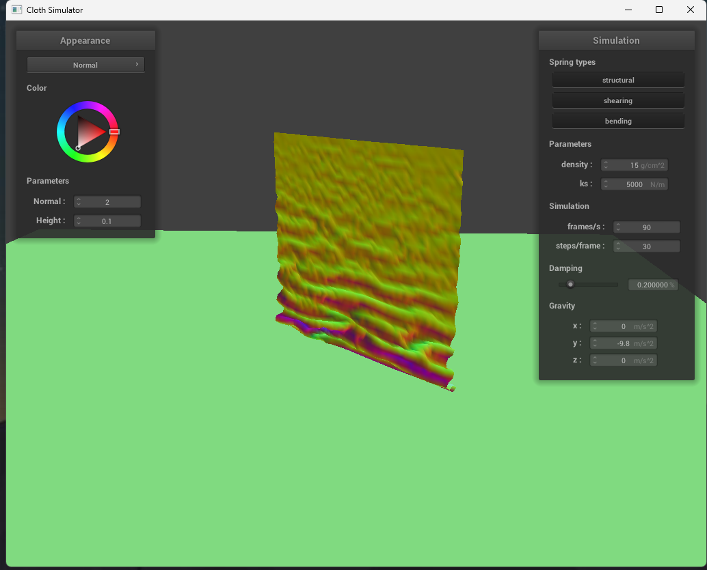 |
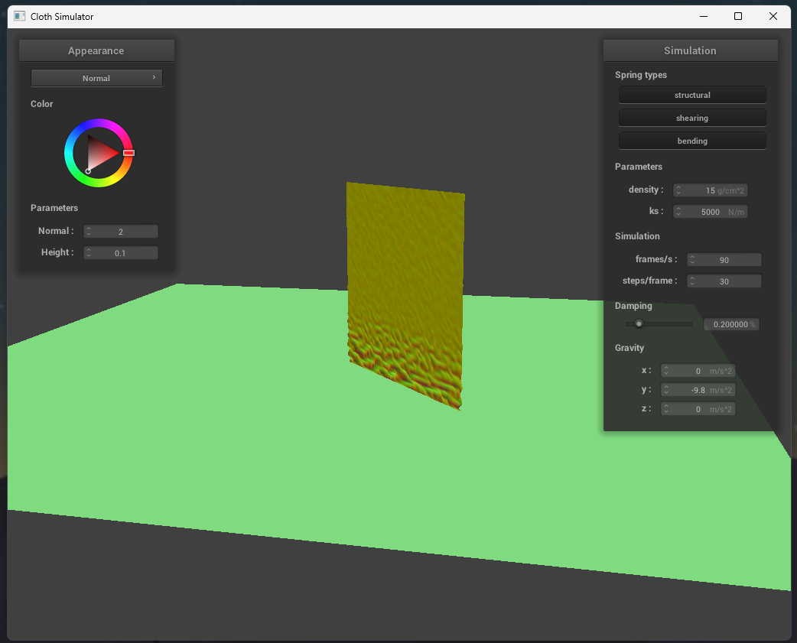 |
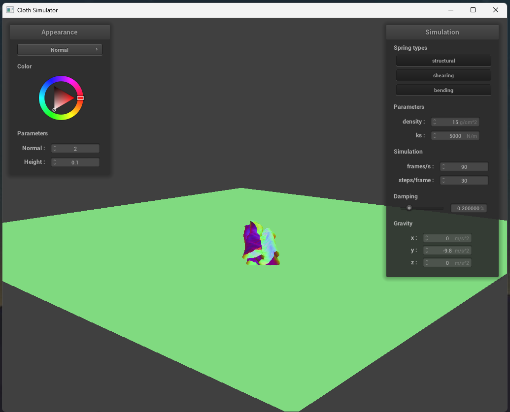 |
|
|
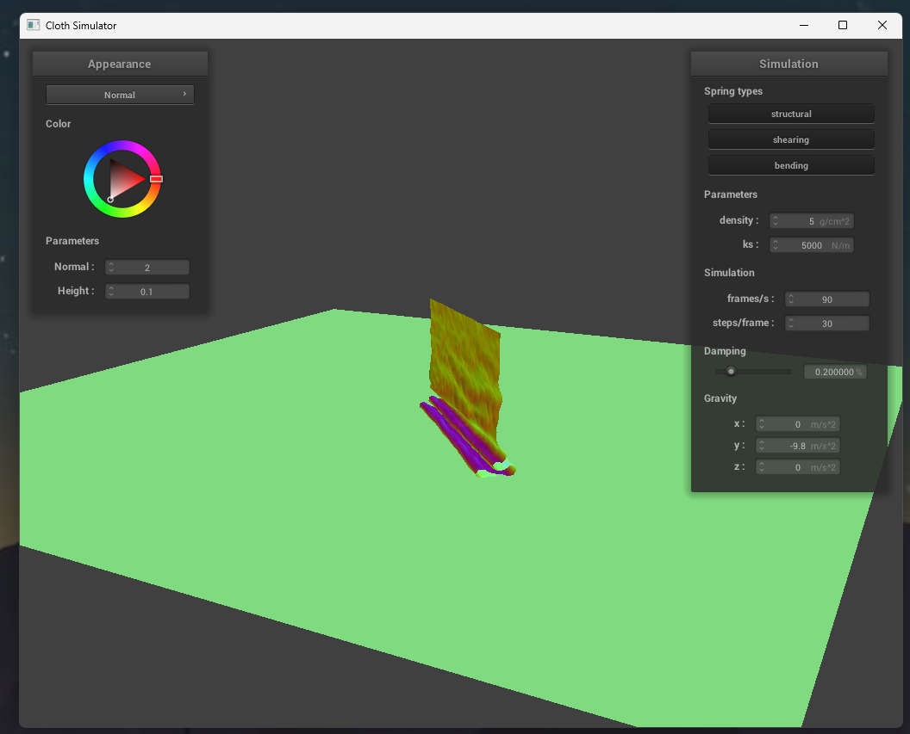 |
|
|
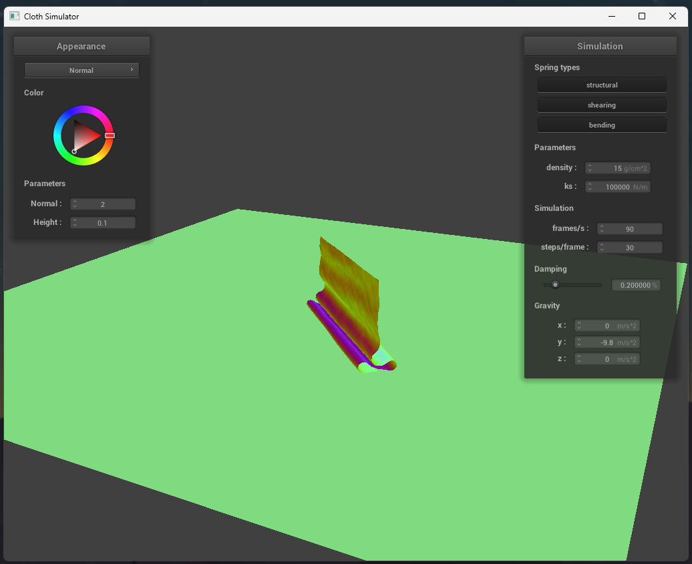 |
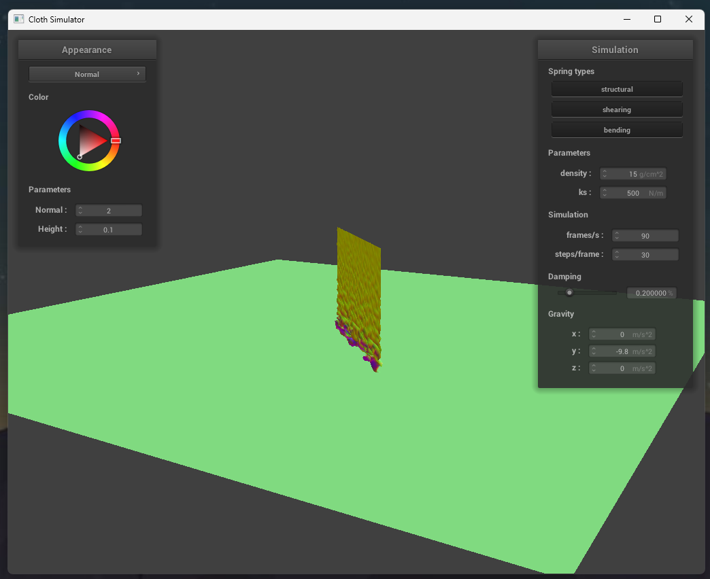 |
A shader program is a small program that runs directly on the GPU, handling the visual appearance of rendered geometry. Rather than the CPU computing every pixel's color, shaders execute in a massively parallel fashion across thousands of GPU cores simultaneously, making real-time lighting and material effects feasible.
The pipeline splits into two key stages. The vertex shader runs once per vertex of the mesh and is responsible for transforming geometry, converting object space positions into screen space clip coordinates via model, view, and projection matrices. It also computes and passes along per-vertex data that downstream stages will need, such as world space normals, tangent vectors, and texture coordinates.
The fragment shader then runs once per rasterized fragment (roughly, each pixel covered by a triangle) and is responsible for determining that fragment's final output color. It receives the interpolated outputs from the vertex shader, so if two vertices have different normals, every fragment between them gets a smoothly blended normal, and uses that data along with material parameters and light information to evaluate a shading model.
Together, the two stages divide the work cleanly: the vertex shader sets up the geometric and spatial context, and the fragment shader uses that context to compute lighting. For example, in a Blinn-Phong shader the vertex shader passes world space position and normal to the fragment shader, which then computes the ambient, diffuse, and specular contributions per fragment using those interpolated values. For displacement mapping, the vertex shader physically moves vertices along their normals based on a texture lookup, changing actual geometry, while the fragment shader handles the resulting shading. This division lets the two stages work in concert to produce a wide range of material and lighting effects efficiently on the GPU.
Blinn-Phong is a local illumination model that approximates how light interacts with a surface by breaking the total reflected light into three separate components that are summed together.
The ambient term is a simple constant contribution that represents indirect light bouncing around the scene from all directions. It ensures that surfaces not directly facing a light source are never completely black, acting as a cheap stand-in for global illumination.
The diffuse term models matte, rough surfaces that scatter incoming light equally in all directions regardless of where the viewer is standing. The brightness depends only on the angle between the surface normal and the direction toward the light source, captured by the dot product of those two vectors. Surfaces facing directly toward the light appear brightest, and surfaces at grazing angles receive less light.
The specular term models the shiny highlight you see on glossy surfaces. Rather than computing the true reflection direction like classic Phong shading does, Blinn-Phong introduces the halfway vector, which is the normalized sum of the view direction and the light direction. The specular intensity is then the dot product of the surface normal with this halfway vector, raised to a shininess exponent. A higher exponent produces a tighter, sharper highlight characteristic of very smooth surfaces, while a lower exponent spreads the highlight out to look rougher. Using the halfway vector instead of the reflection vector is both cheaper to compute and actually produces more physically plausible results at grazing angles.
The final shaded color is the weighted sum of all three terms, with each component scaled by its own coefficient that controls how much that type of reflection contributes to the overall appearance of the material.
|
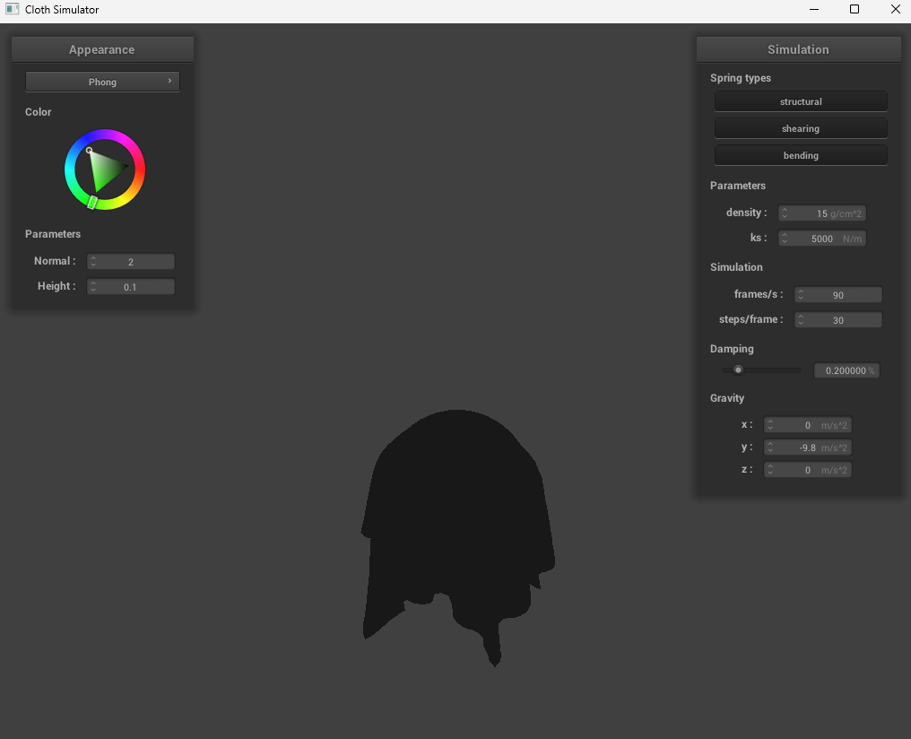 |
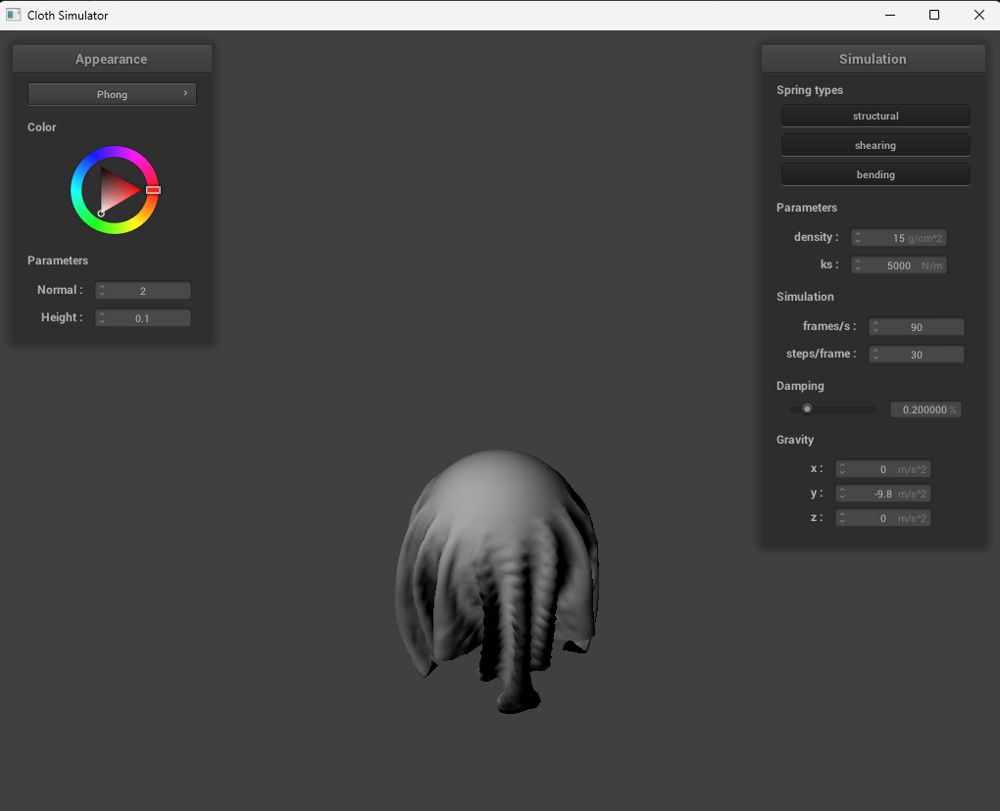 |
|
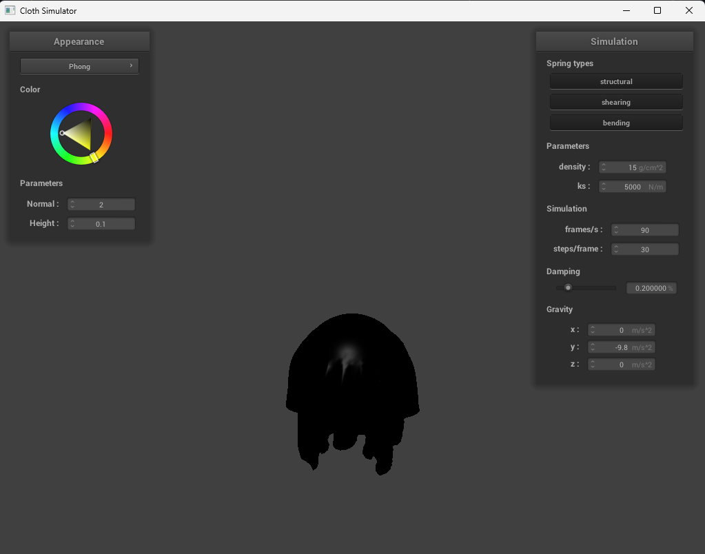 |
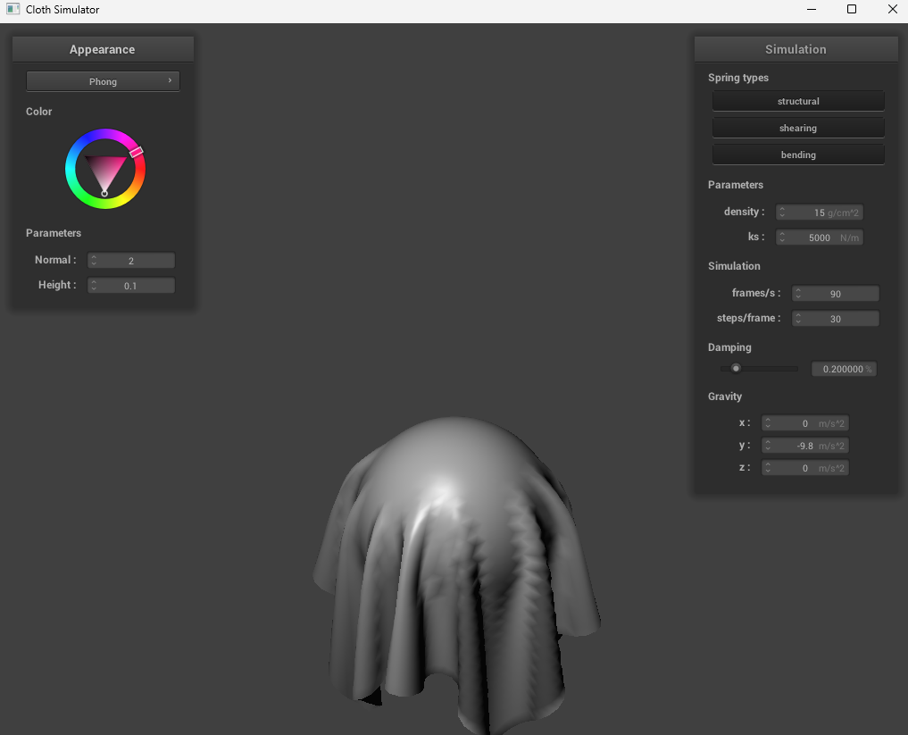 |
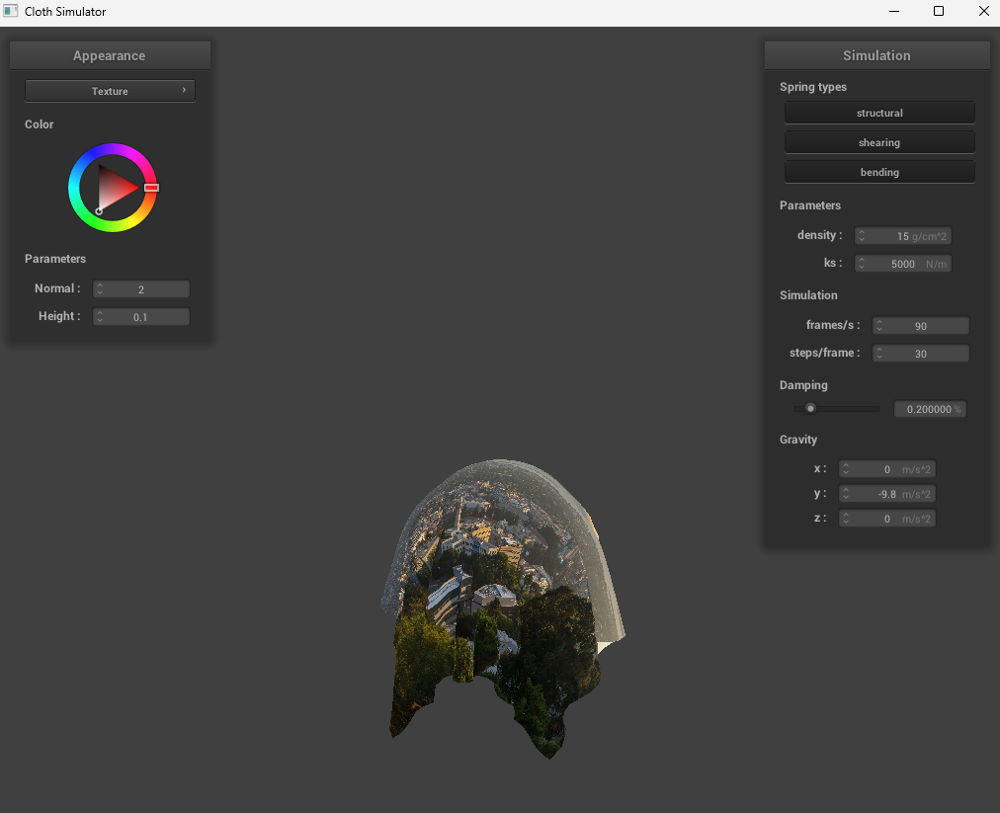
Bump mapping is purely a shading trick. The vertex positions of the sphere and cloth are never actually moved; instead, the fragment shader perturbs the surface normal at each pixel based on a height texture before computing lighting. This creates the illusion of surface detail through shading alone. Looking at the bump renders, the silhouette of the sphere remains a perfectly smooth curve regardless of the texture detail, because the underlying geometry is unchanged.
Displacement mapping goes further by actually modifying vertex positions in the vertex shader, physically pushing vertices outward along their normals according to the height map. This means the geometry truly changes shape, and the effect is visible not just in shading but in the actual silhouette and profile of the mesh.
At resolution 16, the difference between the two approaches is stark. The bump mapped sphere still looks reasonably detailed in its shading since the normal perturbation works at the fragment level regardless of mesh density, though it looks a bit blocky. The displacement mapped sphere at this resolution looks visibly faceted and lumpy because there are so few vertices to actually displace; the geometry changes manifest as coarse, chunky protrusions rather than smooth surface detail.
At resolution 128, the displacement map looks dramatically better and much closer to the bump map result. With many more vertices available to displace, the geometry can faithfully represent the fine height variations in the texture. The two renders converge in appearance at high mesh density, though displacement still wins on silhouette accuracy since the actual geometry profile reflects the texture detail rather than faking it through normals alone.
|
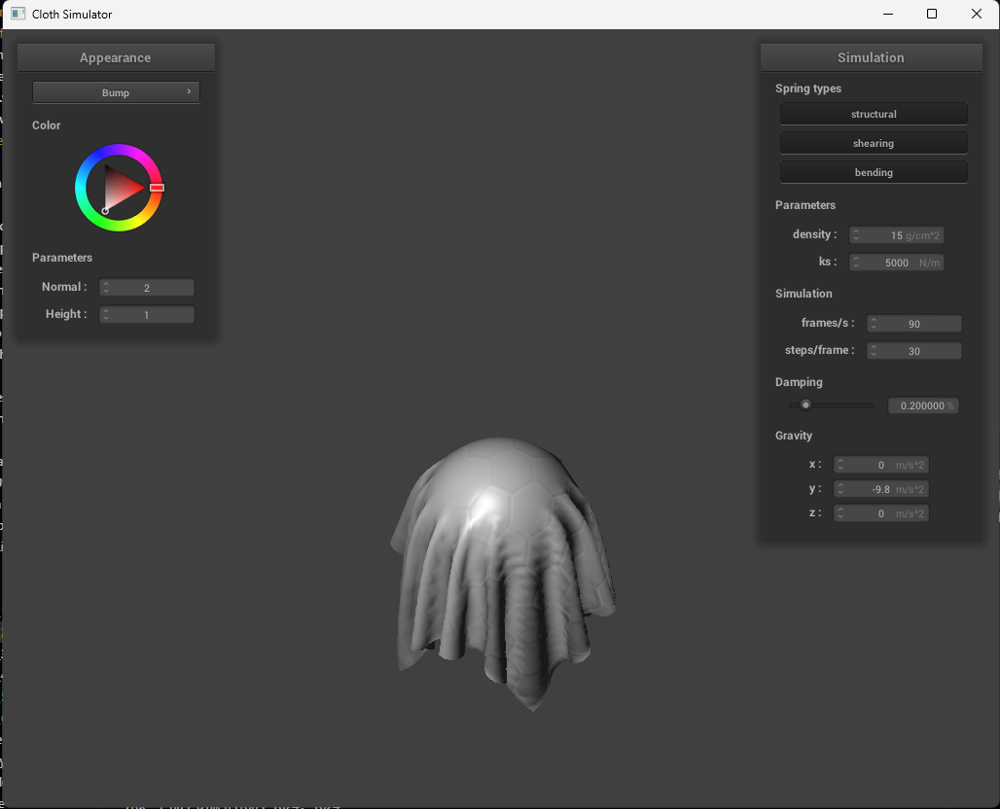 |
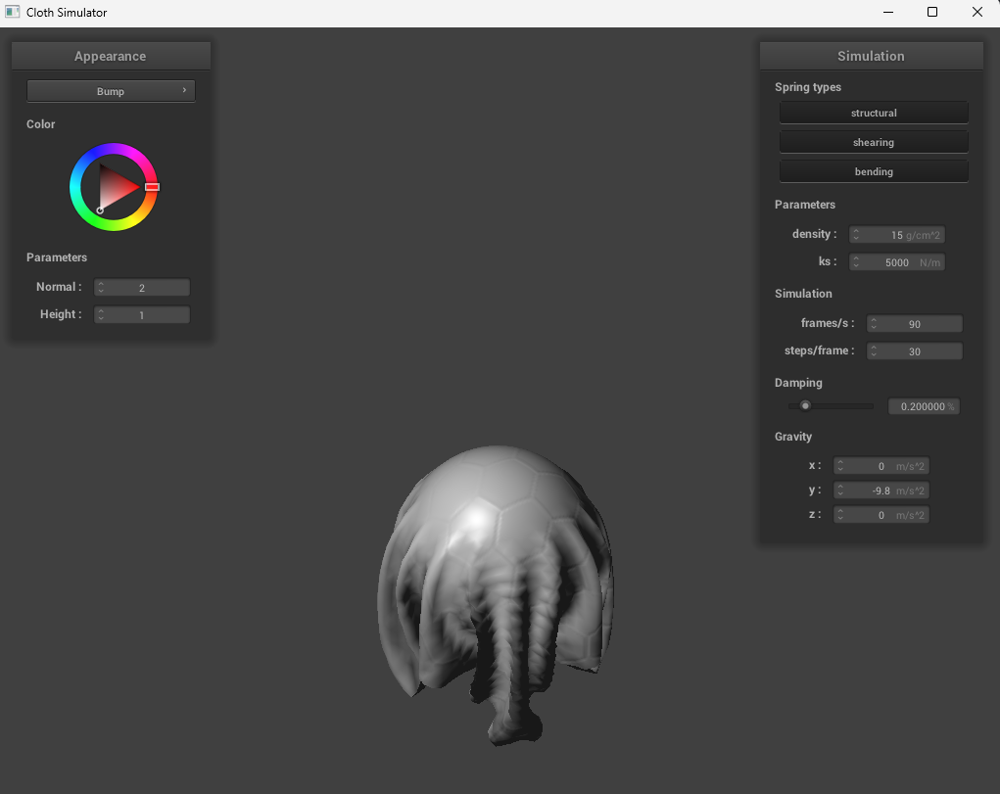 |
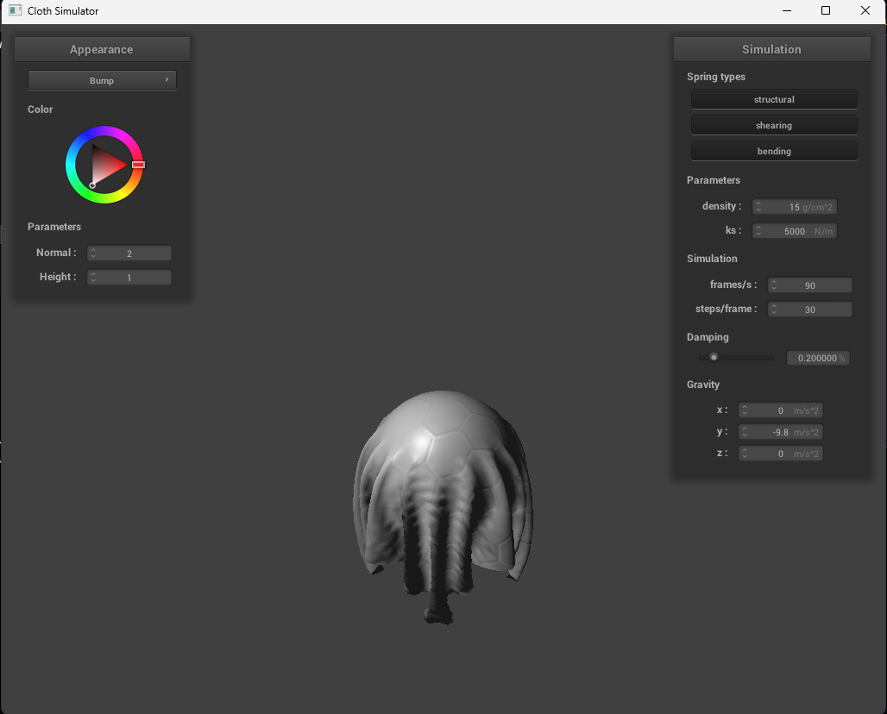 |
|
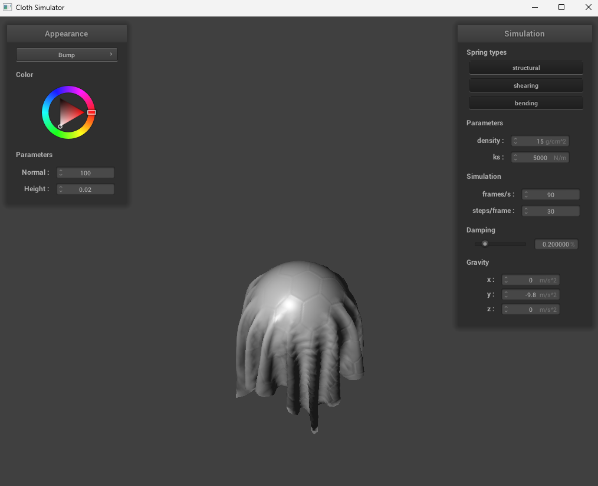 |
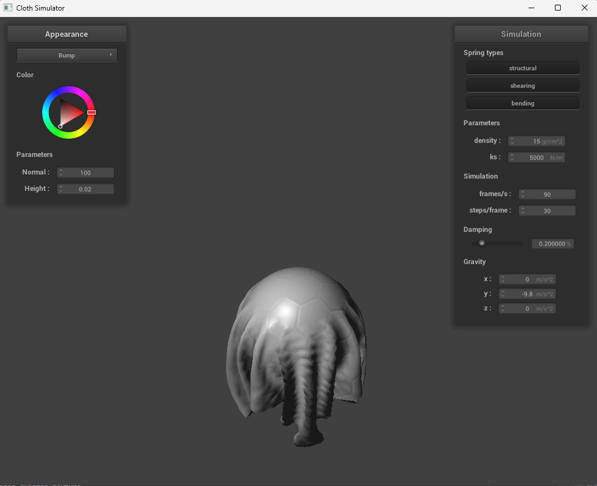 |
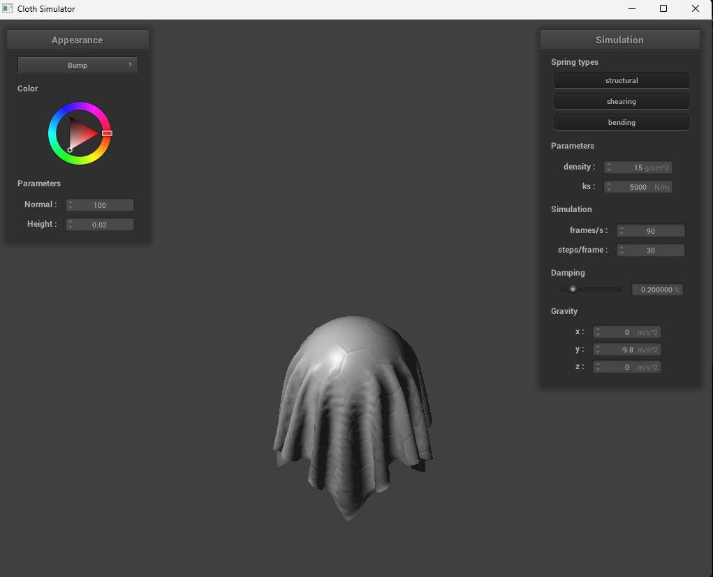 |
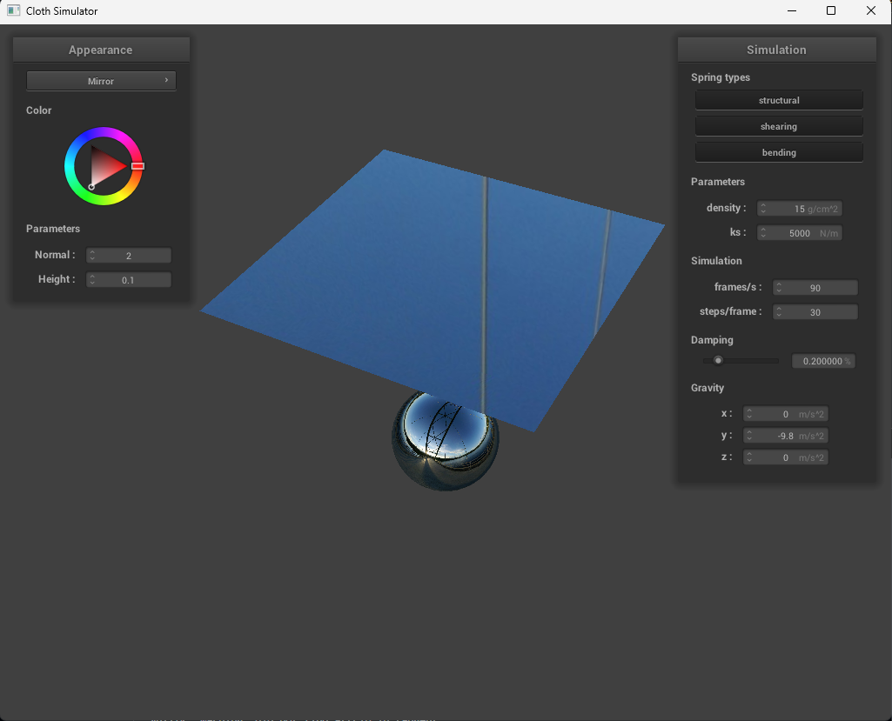